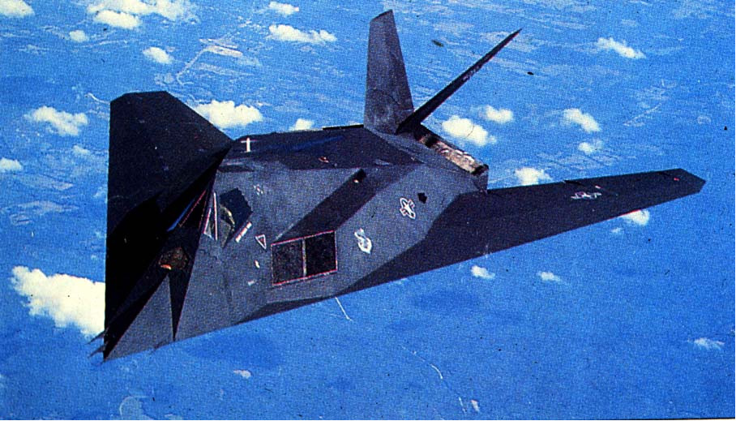

|
|
|
Selected Papers
(download a PDF file and
read using Adobe Acrobat)

F-117 stealth fighter and a Boeing 767 commercial
airplane. One of the purposes of flow control
is to optimize the performance of both types of
flyers, for example maximize their lift and minimize
their drag.
|
|